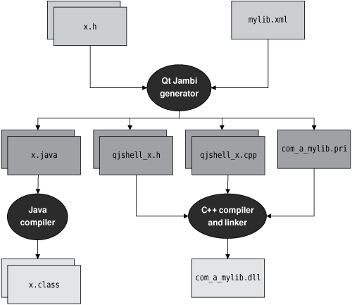
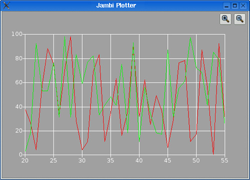

|
|
Qt Jambi lets C++ programmers easily integrate their Qt code with Java. To make our own custom C++ components available to Qt Jambi, we can use the Qt Jambi Generator, which takes a set of C++ header files and an XML file that provides some information about the C++ classes that we want to wrap and produces Java bindings for our C++ components. The Qt Jambi API itself is created using the generator.
Figure C.4 illustrates the process. After running the generator, we obtain some Java files that we must compile using the Java compiler, and some .h and .cpp files that we must compile into a C++ shared library.

To illustrate the process, we will provide bindings for the data-only PlotSettings class and for the Plotter widget that we developed in Chapter 5 (p. 121). We will then use the bindings in a Java application. Figure C.5 shows the application running.

The header file we need must define (or include header files that define) all the classes necessary for the library we will build:
#include <QtGui> #include "../plotter/plotter.h"
We assume that the Plotter example code lies in a directory parallel to the Qt Jambi wrapper. We also need an XML file to tell the generator what to wrap and how to wrap it. The file is called jambiplotter.xml:
<typesystem package="com.softwareinc.plotter"
default-superclass="com.trolltech.qt.QtJambiObject">
<load-typesystem name=":/trolltech/generator/typesystem_core.txt"
generate="no" />
<load-typesystem name=":/trolltech/generator/typesystem_gui.txt"
generate="no" />
<object-type name="Plotter" />
<value-type name="PlotSettings" />
</typesystem>
In the outer tag, we specify a Java package name of com.softwareinc.plotter for the Plotter component. The <load-typesystem> tags import the information concerning the QtCore and QtGui modules.
The <object-type> and <value-type> tags specify the two C++ classes we want to make available. We have specified that the Plotter class is a C++ "object type"; this is suitable for objects that cannot be copied, such as widgets. In contrast, the PlotSettings class is treated as a C++ "value type".
To Qt Jambi users, there is no obvious difference between the two. The distinction is important when the generator maps C++ APIs to Java APIs. For example, if a "value type" is returned from a method, the generator will ensure that a new independent object is returned (to avoid side effects), but if the returned type is an object type, a reference to the original object is returned.
We will need two environment variables, one specifying the path to Qt Jambi, the other to Java. Here is how we set them on Unix systems (using the Bash shell):
export JAMBIPATH=$HOME/qtjambi-linux32-gpl-4.3.2_01 export JAVA=/usr/java/jdk1.6.0_02
set JAMBIPATH=C:\QtJambi set JAVA="C:\Program Files\Java\jdk1.6.0_02"
Naturally, the version numbers and directories may be different for your system. From now on, we will assume that JAMBIPATH and JAVA are available. Once we have the header and XML files, we can run the generator in a console:
$JAMBIPATH/bin/generator jambiplotter.h jambiplotter.xml
If Qt Jambi has been installed locally rather than system-wide, this may fail on some systems. The solution is to provide a suitable path to Qt Jambi's libraries:
export LD_LIBRARY_PATH=$LD_LIBRARY_PATH:$JAMBIPATH/lib
Again, we have used the Bash shell's syntax. On Mac OS X, the relevant environment variable is called DYLD_LIBRARY_PATH. On Windows, the equivalent is achieved by adding to the PATH:
set PATH=%PATH%;%JAMBIPATH%\lib
Now, on Windows, we can run the generator like this:
%JAMBIPATH%\bin\generator jambiplotter.h jambiplotter.xml
The code generation takes a few moments, and outputs some summary information on the console. For our example, the generator produced the following files, in two parallel directories:
../com/softwareinc/plotter/PlotSettings.java ../com/softwareinc/plotter/Plotter.java ../com/softwareinc/plotter/QtJambi_LibraryInitializer.java ../cpp/com_softwareinc_plotter/com_softwareinc_plotter.pri ../cpp/com_softwareinc_plotter/metainfo.cpp ../cpp/com_softwareinc_plotter/metainfo.h ../cpp/com_softwareinc_plotter/qtjambi_libraryinitializer.cpp ../cpp/com_softwareinc_plotter/qtjambishell_PlotSettings.cpp ../cpp/com_softwareinc_plotter/qtjambishell_PlotSettings.h ../cpp/com_softwareinc_plotter/qtjambishell_Plotter.cpp ../cpp/com_softwareinc_plotter/qtjambishell_Plotter.h
We must now compile both the Java and the C++ files, but before we do this we should make sure that the CLASSPATH environment variable is set correctly. For example, if we are using the Bash shell, we might do this:
export CLASSPATH=$CLASSPATH:$JAMBIPATH/qtjambi.jar:$PWD:$PWD/..
Here we have extended the existing CLASSPATH with the Qt Jambi .jar file, with the current directory, and with the current directory's parent directory. We need the parent directory so that we can access the parallel com directory. On Windows, the syntax would be
set CLASSPATH=%CLASSPATH%;%JAMBIPATH%\qtjambi.jar;%CD%;%CD%\..
We can now compile the .java files into .class files:
cd ../com/softwareinc/plotter javac *.java
After compiling the .java files, we must return to the jambiplotter directory. Here, the next step is to create the C++ shared library that provides the C++ code for Plotter and PlotSettings, as well as the C++ wrapper code produced by the generator. We begin by creating a .pro file:
TEMPLATE = lib
TARGET = com_softwareinc_plotter
DLLDESTDIR = .
HEADERS = ../plotter/plotter.h
SOURCES = ../plotter/plotter.cpp
RESOURCES = ../plotter/plotter.qrc
INCLUDEPATH += ../plotter \
$$(JAMBIPATH)/include \
$$(JAVA)/include
unix {
INCLUDEPATH += $$(JAVA)/include/linux
}
win32 {
INCLUDEPATH += $$(JAVA)/include/win32
}
LIBS += -L$$(JAMBIPATH)/lib -lqtjambi
include(../cpp/com_softwareinc_plotter/com_softwareinc_plotter.pri)
The TEMPLATE variable must be set to lib since we want to create a shared library rather than an application. The TARGET variable specifies the name of the Java package but with underscores used instead of periods, and DLLDESTDIR specifies where the shared library (or DLL) should be put. The INCLUDEPATH variable must be extended to include the source directory (since it is not the current directory in this case), the Qt Jambi include path, the Java SDK's include path, and the Java SDK's platform-specific include path. (We cover the unix and win32 syntaxes in Appendix B.) We must also include the Qt Jambi library itself, which we do in the LIBS entry. The include() directive at the end is used to access the C++ files the generator produced. Once we have the .pro file, we can run qmake and make as usual to build the library.
Now that we have the shared library and suitable Java wrapper code, we are ready to make use of them in an application. The Jambi Plotter application creates a PlotSettings and a Plotter object and uses them to display some random data. The important point is that they are used just like any other Java or Qt Jambi class. The whole application is quite small, so we will show it in full:
import java.lang.Math;
import java.util.ArrayList;
import com.trolltech.qt.core.*;
import com.trolltech.qt.gui.*;
import com.softwareinc.plotter.Plotter;
import com.softwareinc.plotter.PlotSettings;
public class JambiPlotter {
public static void main(String[] args) {
QApplication.initialize(args);
PlotSettings settings = new PlotSettings();
settings.setMinX(0.0);
settings.setMaxX(100.0);
settings.setMinY(0.0);
settings.setMaxY(100.0);
int numPoints = 100;
ArrayList<QPointF> points0 = new ArrayList<QPointF>();
ArrayList<QPointF> points1 = new ArrayList<QPointF>();
for (int x = 0; x < numPoints; ++x) {
points0.add(new QPointF(x, Math.random() * 100));
points1.add(new QPointF(x, Math.random() * 100));
}
Plotter plotter = new Plotter();
plotter.setWindowTitle(plotter.tr("Jambi Plotter"));
plotter.setPlotSettings(settings);
plotter.setCurveData(0, points0);
plotter.setCurveData(1, points1);
plotter.show();
QApplication.exec();
}
}
We import a couple of Java's standard libraries and the Qt Jambi libraries that we need, as well as the PlotSettings and Plotter classes. We could just as easily have written import com.softwareinc.plotter.*.
After initializing the QApplication object, we create a PlotSettings object and set some of its values. The C++ version of this class has minX, maxX, minY, and maxY as public variables. Unless told otherwise, the Qt Jambi generator produces accessor methods for such variables, using the Qt naming convention (e.g., minX() and setMinX()). Once we have suitable plot settings, we generate two lots of curve data, with 100 random points each. In C++/Qt, the points of each curve are held as a QVector<QPointF>; in Qt Jambi, we pass an ArrayList<QPointF> instead, relying on Qt Jambi to transform from one to the other as needed.
With the settings and curve data ready, we create a new Plotter object with no parent (to make it a top-level window). Then we give the plotter the plot settings, and the data for two curves, and call show() to make the plotter visible. Finally, we call QApplication.exec() to start off the event loop.
When we compile the application, we must be careful to include not only the normal CLASSPATH but also the path to the com.softwareinc.plotter package. To run the application, we must also set up a couple of additional environment variables, to ensure that the loader will find Qt Jambi and our bindings. On Windows, we must set PATH as follows:
set PATH=%PATH%;%JAMBIPATH%\bin;%CD%
On Unix, we must set LD_LIBRARY_PATH:
export LD_LIBRARY_PATH=$LD_LIBRARY_PATH:$JAMBIPATH/lib:$PWD
On Mac OS X, the environment variable is called DYLD_LIBRARY_PATH. Also, on all three platforms, we must set QT_PLUGIN_PATH to include Qt Jambi's plugins directory. For example:
set QT_PLUGIN_PATH=%QT_PLUGIN_PATH%;%JAMBIPATH%\plugins
To compile and run Jambi Plotter on all platforms, thanks to our additions to the CLASSPATH, we can simply type this:
javac JambiPlotter.java java JambiPlotter
We have now completed the example, and shown how to make use of C++ components in Qt Jambi applications. In fact, the Qt Jambi generator that is the basis of making C++ components available to Java offers many more features than this brief introduction has shown. Although the generator supports only a subset of C++, this subset comprises all of the most common C++ constructs, including multiple inheritance and operator overloading. The generator is documented in full at http://doc.trolltech.com/qtjambi-4.3.2_01/com/trolltech/ qt/qtjambi-generator.html. We will briefly mention just a few features we didn't need in the example, to give a flavor of what's available.
The key to influencing how the generator works is what we put in the XML file we give it. For example, if we have multiple inheritance in C++, one straightforward way to handle this in Qt Jambi is to identify just one of the classes concerned as an "object type" or "value type" in the type system, and identify all the others as "interface types".
It is also possible to provide more natural method signatures. For example, instead of using an ArrayList<QPointF> to pass the points for a curve, it would be nicer to pass a QPointF array. This involves hiding the original C++ method and replacing it with a Java method that accepts a QPointF[] and calls the original C++ method behind the scenes. We can achieve this by modifying the jambiplotter.xml file. We originally declared the C++ Plotter type with an entry like this:
<object-type name="Plotter" />
We will replace the preceding line with a more sophisticated version:
<object-type name="Plotter">
<modify-function
signature="setCurveData(int,const QVector<QPointF>&)">
<access modifier="private" />
<rename to="setCurveData_private" />
</modify-function>
<inject-code>
public final void setCurveData(int id,
com.trolltech.qt.core.QPointF points[]) {
setCurveData_private(id, java.util.Arrays.asList(points));
}
</inject-code>
</object-type>
In the <modify-function> element, we rename the C++ setCurveData() method to be setCurveData_private() and change its access specifier to private, thereby preventing access to it from outside the class's own methods. Notice that we must escape XML's special characters '<', '>', and '&' in the signature attribute.
In the <inject-code> element, we implement a custom setCurveData() method in Java. This method accepts a QPointF[] argument and simply calls the private setCurveData_private() method, converting the array to the list that the C++ method expects.
Now we can create and populate QPointF arrays in a more natural manner:
QPointF[] points0 = new QPointF[numPoints];
QPointF[] points1 = new QPointF[numPoints];
for (int x = 0; x < numPoints; ++x) {
points0[x] = new QPointF(x, Math.random() * 100);
points1[x] = new QPointF(x, Math.random() * 100);
}
The rest of the code is the same as before.
In some cases, when classes are wrapped, the generator produces code that uses QNativePointer. This type is a wrapper for C++ "value type" pointers and works for both pointers and arrays. The file mjb_nativepointer_api.log specifies any generated code that uses QNativePointer. The Qt Jambi documentation recommends replacing any code that uses QNativePointer and provides step-by-step instructions for how to do this.
Sometimes we will need to include additional import declarations in the generated .java files. This is easily achieved using the <extra-includes> tag, and is fully described in http://doc.trolltech.com/qtjambi-4.3.2_01/com/trolltech/qt/ qtjambi-typesystem.html.
The Qt Jambi generator is a powerful and versatile tool for making C++/Qt classes seamlessly available to Java programmers, and makes it possible to combine the strengths of C++ and Java in a single project.
|
|
| Converted from CHM to HTML with chm2web Pro 2.85 (unicode) |